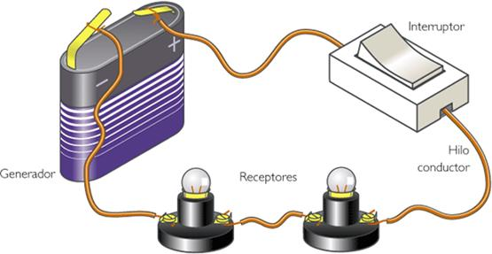

Un circuito eléctrico es un conjunto de componentes interconectados que forman al menos una trayectoria cerrada y permiten la circulación de una corriente eléctrica para transformar esa energía en luz, calor o movimiento.

Un circuito eléctrico básico está formado por cuatro elementos esenciales: el generador o fuente, que produce la electricidad y mantiene el voltaje, como una pila o batería; los conductores, que son los cables encargados de transportar la corriente eléctrica entre los componentes; el receptor o resistencia, que recibe la energía eléctrica y la transforma en otra forma de energía, como luz o movimiento; y el interruptor, que permite abrir o cerrar el circuito para controlar el paso de la corriente.
Los circuitos eléctricos se clasifican en varios tipos según su configuración y funcionamiento. Los circuitos en serie son aquellos en los que los componentes están conectados uno tras otro, formando una única trayectoria para la corriente. En cambio, los circuitos en paralelo tienen múltiples trayectorias para la corriente, lo que permite que cada componente funcione independientemente.